La Confrérie des Mauvais Mutants

La Confrérie des Mauvais Mutants
Formée initialement par Magnéto, la Confrérie des Mauvais Mutants visait à asseoir la supériorité des mutants face aux humains.
Les premiers membres de la Confrérie étaient :
La première opération du groupe fut contrée par les X-Men originaux.
Magnéto chercha ensuite à à recruter Thor et Namor au sein du groupe, mais les deux héros refusèrent.
D'autres mutants, contactés par le Cerveau mais effrayés par leur terrible leader, refusèrent aussi, comme le Colosse et Unus.
Finalement, après une rencontre avec l'Étranger, le groupe se sépara, et les jumeaux Maximoff rejoignirent les Avengers peu après.
La Nouvelle Confrérie
Quittant l'organisation qui les avait employés, Unus et le Colosse retrouvèrent le Cerveau.
Le trio forma une nouvelle Confrérie.
Ils cherchèrent à prendre leur revanche sur les X-Men et piégèrent le Fauve en lui faisant croire qu'il avait tué Iron Man.
Le mutant réalisa le plan des criminels et réussit à les vaincre seul.
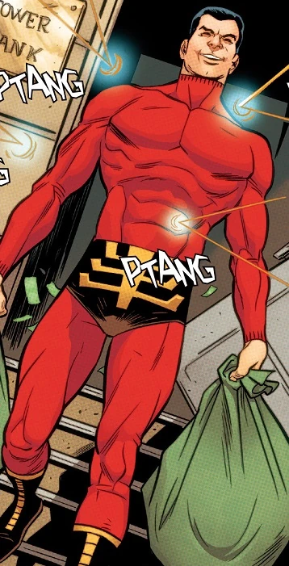
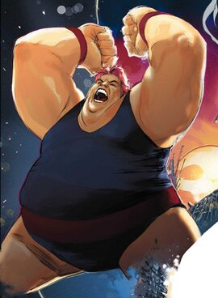

La seconde Confrérie de Magnéto
Revenu sur Terre avec le Crapaud, Magnéto retrouve le Cerveau, Unus et le Colosse.
Avec l'aide de la mutante Lorelei, de la Terre Sauvage, il créa un être nommé Alpha, le Mutant Ultime.
Dans une rencontre contre les Defenders, la créature se retourna contre son maître et fit rajeunir les vilains.

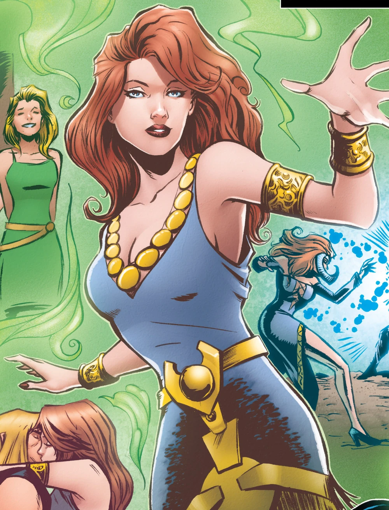
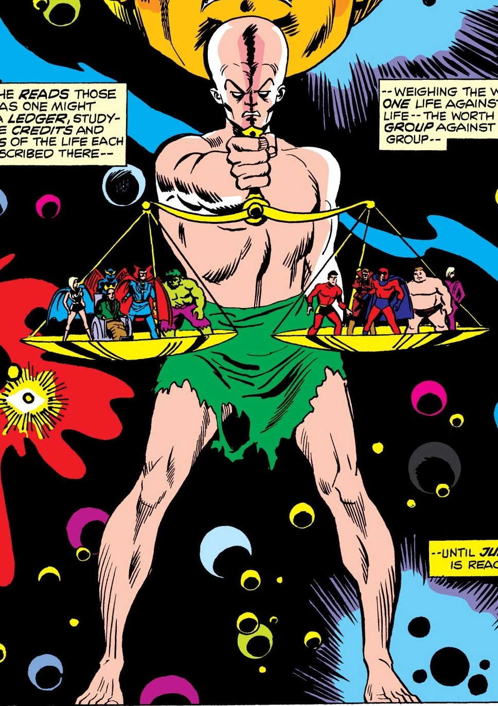
La troisième Confrérie de Magnéto
Ayant été ramené à l'âge adulte par Eric le Rouge, un agent Shi'ar, Magnéto reforma rapidement une Confrérie avec des mutants peu connus :
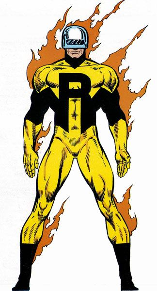
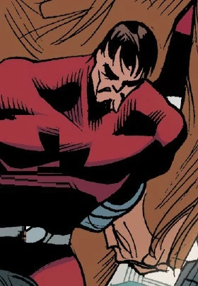
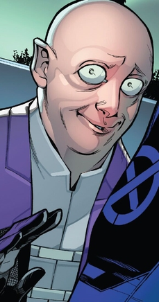
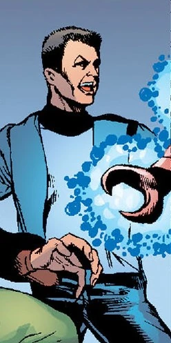
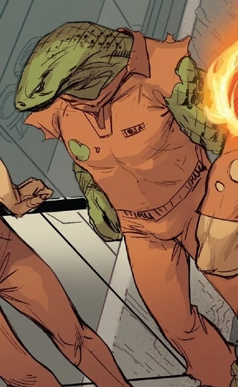
Déçu par ses agents lors d'une mission où ils devaient capturer un monstre hydrocéphale, Magnéto les abandonna à leur adversaire, Captain America.
Les hommes restèrent soudés et formèrent bientôt la Force Mutante, puis les Résistants.
La Confrérie de Mystique
La mutante métamorphe Mystique contacta le Colosse et forma sa propre confrérie, composée de :

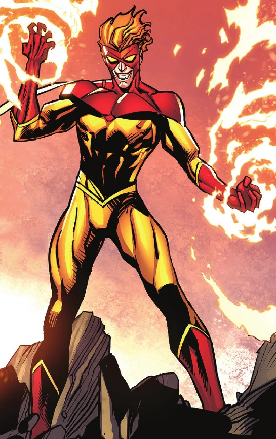
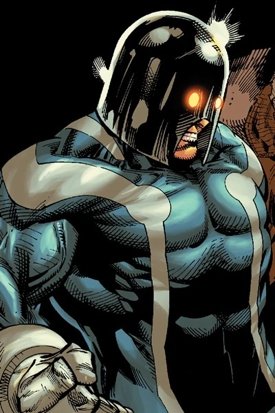
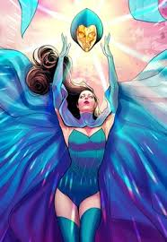

Le groupe se retrouva vite opposé à Miss Marvel et un combat entre l'héroïne et Malicia transforma définitivement cette dernière, physiquement comme mentalement.
Mystique tenta d'assassiner le sénateur Robert Kelly, farouchement anti-mutant, mais les X-Men intervinrent et les vilains furent incarcérés.
Malicia libéra ses comparses, mais le Colosse, Pyro et Avalanche furent de nouveau arrêtés par Rom le Chevalier de l'Espace.
Mystique tenta de recruter Hybrid, mais le jeune homme se révéla trop puissant à manipuler.
Finalement, Mystique, Destinée et Malicia aidèrent Rom à vaincre l'hybride en le détruisant temporairement.
Leur cible suivant fut Angel, mais le X-Man fut sauvé par Dazzler.
Depuis, Mystique voue une haine farouche envers la popstar mutante.
Malicia quitta Mystique pour rejoindre les X-Men et apprendre à mieux contrôler ses pouvoirs.
La Confrérie, quant à elle, fut contactée par le gouvernement Américain et chargée de pourchasser Magnéto.
La Confrérie, amnistiée et ainsi sponsorisée officiellement devint la Freedom Force.
La Confrérie du Crapaud
Fidèle sbire de Magnéto, le Crapaud voulut avoir son heure de gloire et il forma sa propre équipe.
Il recruta le Colosse, Pyro, Sauron et Phantazia, et s'allia avec des Morlocks pour détruire X-Force.
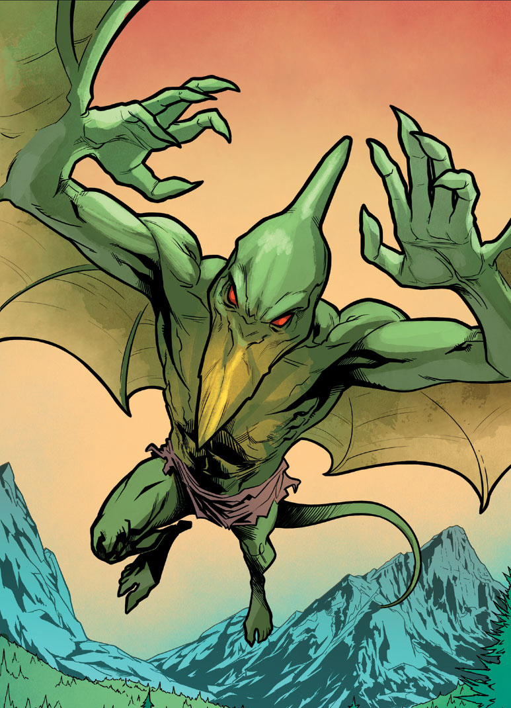
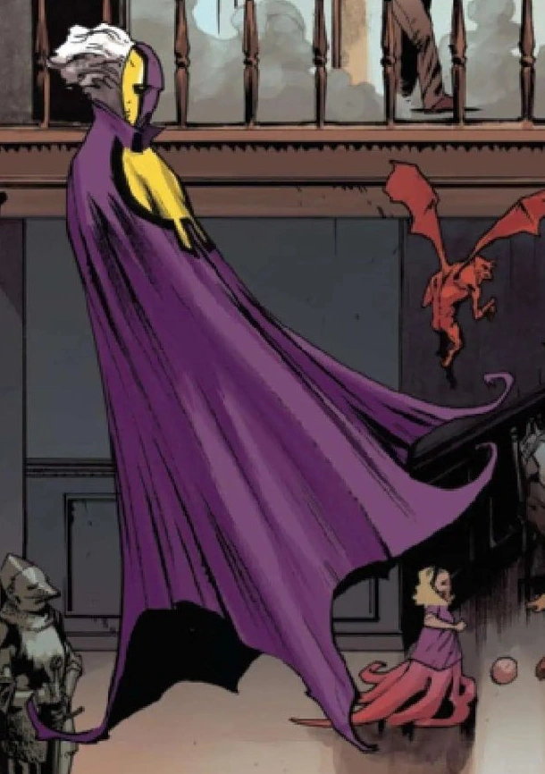
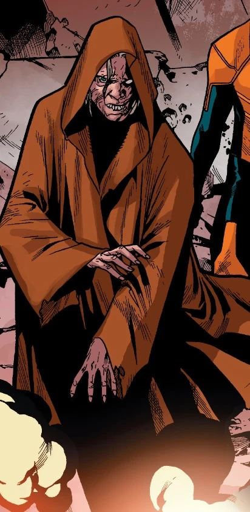
Durant la bataille, Sauron et le Morlock Masque furent apparemment tués.
Toutefois, tous deux refirent surface quelques mois après, et la Confrérie visa cette fois-ci X-Factor.
Par la suite, le groupe se heurta à Darkhawk et au Sleepwalker, puis les vilains partirent chacun dans des directions différentes.
La seconde Confrérie de Mystique
La Confrérie fut remise sur pied par Mystique, recrutant les mutants Dents-de-Sabre, Post et Martinique Jason.
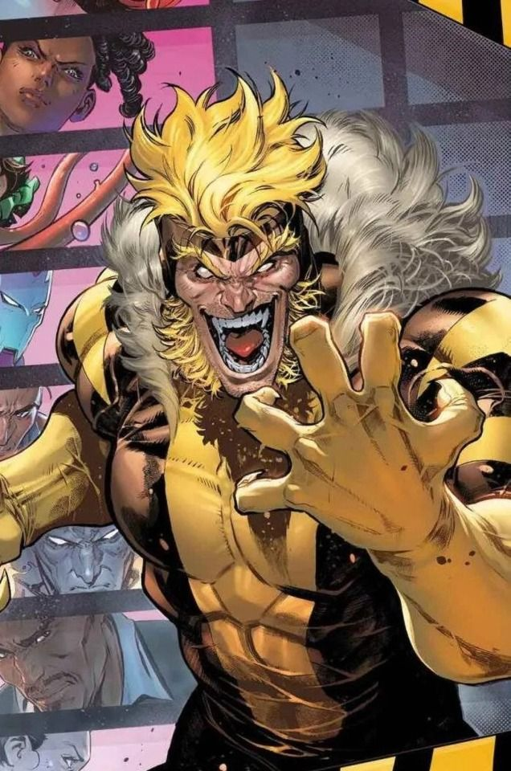
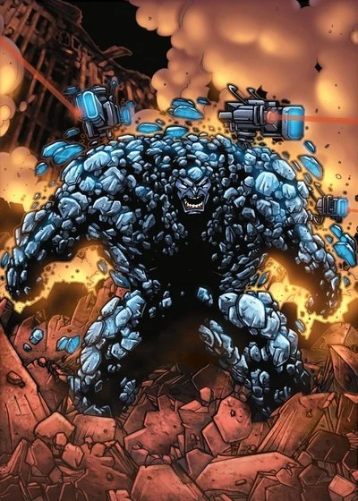

Le groupe visait à assassiner de nouveau Robert Kelly, candidat à la Maison Blanche.
Tandis que Mystique, Creed et le Crapaud créaient une diversion en attaquant le laboratoire de l'île de Muir, Avalanche, le Colosse et Post visèrent le meeting de Kelly.
Les X-Men se séparèrent en deux groupe, mais furent incapables d'empêcher la destruction du laboratoire, et arrivèrent trop tard au meeting.
C'est finalement Pyro, en phase terminale du virus Legacy et, cherchant à se racheter, protégea le politicien des mutants.
Il se sacrifia en incinérant Post.
En dépit de cela, Kelly fut finalement tué par un manifestant pour les droits mutants.
La plupart des membres de la Confrérie furent emprisonnés, puis recrutés de force au sein du X-Corps du Hurleur.
La troisième Confrérie de Mystique
Mystique, camouflée sous l'identité de Surge, et plusieurs de ses sbires infiltrèrent peu à peu le X-Corps et s'en emparèrent, blessant sérieusement le Hurleur au passage.
Les X-Men intervinrent, et Mystique et Abyss furent aspirés dans une autre dimension, où elle retrouva Azazel, le père biologique de son fils Diablo.
De retour sur Terre, Charles Xavier trouva la jeune femme et la punit pour ses actions et ses mensonges (elle prétendait qu'une autre personne s'était faite passée pour elle et avait formé la seconde et la troisième incarnation de la Confrérie).
Xavier l'obligea à accomplir des missions secrètes servant ses objectifs.
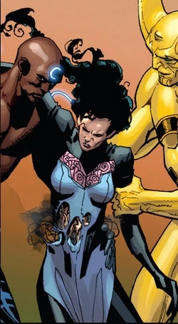

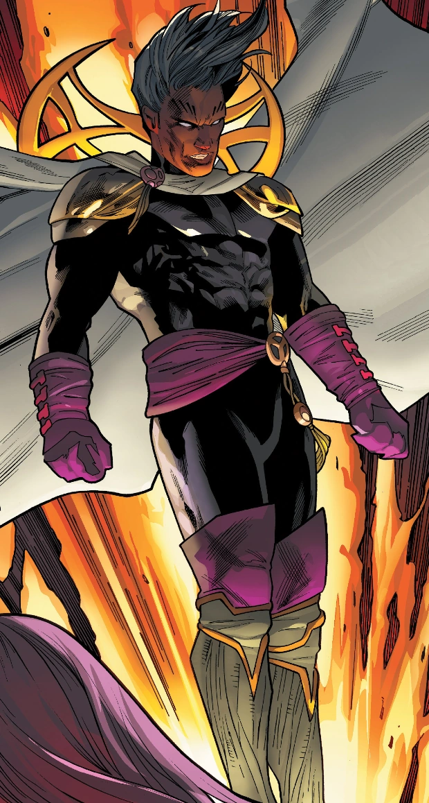
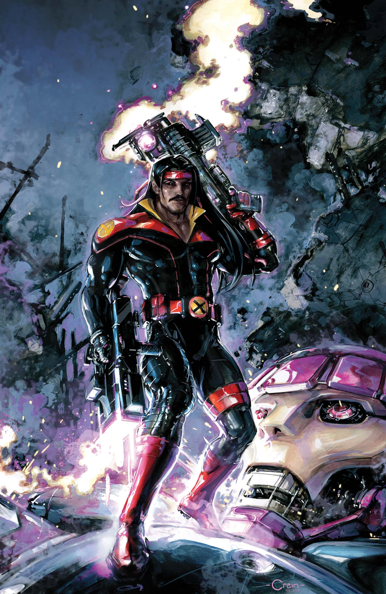